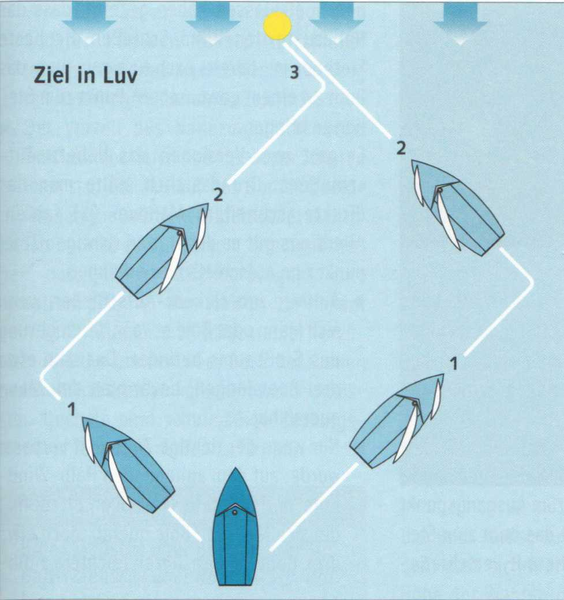
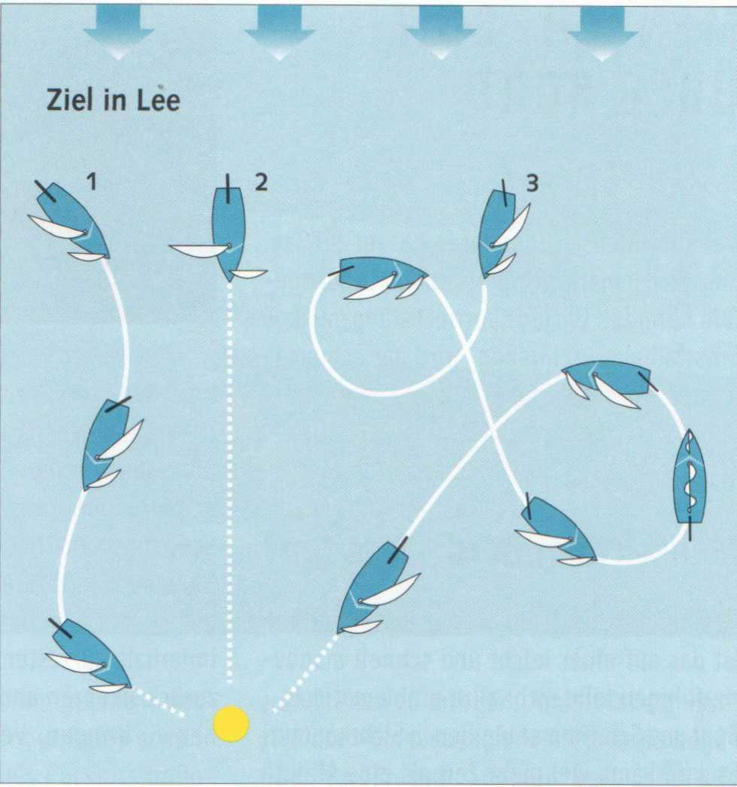

Kreuzen heißt, abwechselnd über Backbord-und Steuerbord-Bug segelnd, im Zickzackkurs an ein Ziel gelangen, das in Luv liegt.
Schlag ist der jeweils auf einem Bug zurückgelegte Weg. Allgemein gilt, so hoch wie möglich am Wind zu segeln. Sobald eine Bö einfällt, anluven, um mehr Höhe herauszuschinden.
Wenn der Wind schralt, man also abfallen muss, ist es meist günstiger, sofort zu wenden, weil man nun auf dem neuen Bug mehr Höhe laufen, vielleicht das Ziel sogar fast anliegen kann.
Man kann mit wenigen langen oder mit meh-reren kurzen Schlägen aufkreuzen. Bei konstant aus einer Richtung wehendem Wind kommt man mit langen Schlägen schneller an, weil jedes Wenden Fahrtverlust bringt. Bei einer häufiger schwankenden Windrichtung sollte man sich mit seinen Schlägen besser nicht allzu weit von der Windachse entfernen.
Im Allgemeinen gilt:
Beim Aufkreuzen dann wenden, wenn das Ziel querab liegt. Nurvordem letzten Schlag direkt auf das Ziel zu sollte man es stets achterlicher als querab haben. Sonst wird man es unter Umständen noch nicht anliegen können, weil das Boot beim Wenden etwas zurückgefallen ist oder aber weil Abdrift durch Strömung oder Wind stärker waren als geglaubt.

Liegt das Ziel, das man erreichen möchte (z. B. eine Boje oderSteg), in Lee, so hat man drei Möglichkeiten:

1. Durch mehrere Halsen sich diesem Ziel zu nähern. Katamarane »kreuzen« grundsätzlich raumschots mit Speed nach Lee. Auch erfahrene Regattasegler mit Gen-naker-Jollen nutzen diese Manöverfolge. Auf Raumwind-Kurs gleiten die Jollen mit hoher Geschwindigkeit.
2. Platt vor dem Wind segeln (Schmetterling). Nicht ganz ungefährlich für Anfänger bei stärkerem Wind. Regattaboote, die mit Spinnaker segeln, fahren »platt vorm Laken« mit guter Geschwindigkeit. Die Strecke zur Boje ist die kürzeste, dafür ist die Geschwindigkeit relativ gering.
3. Eine Folge von Q-Wenden. Die sicherste, aber auch zeitaufwendigste Art nach Lee zu »kreuzen«.